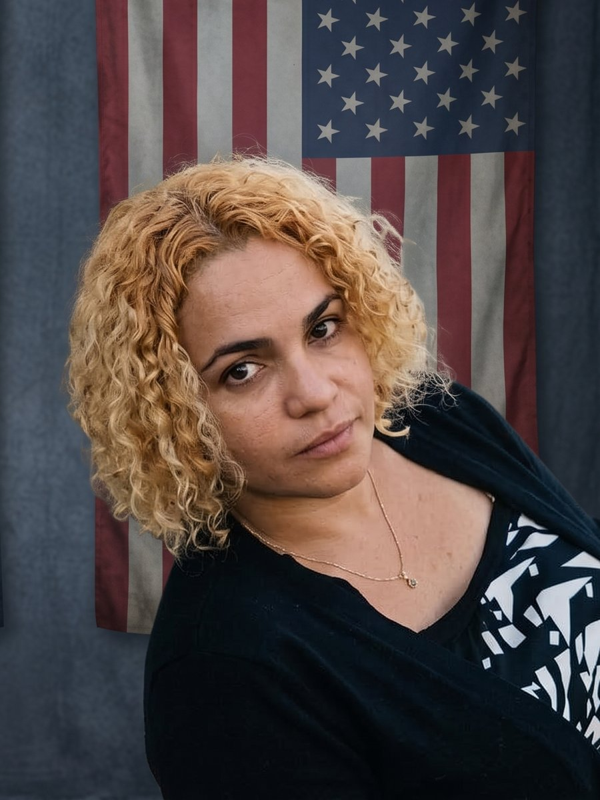

Expediente EXP-003 · Presa política

- NOMBRE:
- María Cristina Garrido Rodríguez
- ORIGEN:
- Quivicán, Mayabeque
- PRISIÓN:
- Prisión de Mujeres de Occidente (El Guatao)
- CONDENA:
- 7 años (11J)
María Cristina Garrido Rodríguez es una reconocida poeta, activista y disidente cubana, destacada como una de las voces emblemáticas del exilio interior y de la causa de los presos políticos tras las protestas históricas del 11 de julio de 2021 (11J).
Orígenes y labor artística
- Lugar de origen: Nació en 1982 en Quivicán, provincia de Mayabeque.
- Trayectoria: Poeta y escritora, galardonada en 2008 con el Primer Premio Nacional en el Concurso Carlos Baliño Tabacalero. Integró organizaciones de derechos humanos y movimientos opositores como la Red Femenina de Cuba y el Partido Republicano de Cuba.
Su detención el 11J (2021)
El 11 de julio de 2021, María Cristina marchó pacíficamente junto a su hermana, Angélica Garrido, y decenas de vecinos en Quivicán manifestándose contra el régimen cubano bajo las consignas de "Patria y Vida".
El 12 de julio de 2021 fue arrestada violentamente por fuerzas de la policía política. Denunció haber sido sometida a severas palizas, aislamiento prolongado y vejaciones para obligarla a gritar consignas a favor del gobierno.
Juicio y sentencia
- Cargos: Acusada de presuntos delitos de "desorden público", "desacato", "propagación de epidemia" y "atentado".
- Condena: En marzo de 2022 fue formalmente condenada a 7 años de privación de libertad en un juicio calificado por su familia y organismos internacionales como desprovisto de garantías procesales y sustentado en testimonios policiales.
- Prisión: Recluida en la Prisión de Mujeres de Occidente (El Guatao), en La Habana.
Resistencia desde la cárcel y notoriedad internacional
A pesar de estar encarcelada y sufrir constantes castigos como restricciones de llamadas y visitas familiares, María Cristina continuó escribiendo poesía en prisión. Sus escritos e informes clandestinos sobre las condiciones carcelarias han sido denunciados y difundidos por plataformas internacionales como PEN International, PEN America y Artists at Risk Connection (ARC).
Uno de sus poemas más difundidos en la disidencia, titulado "El cementerio de los vivos", retrata la dureza y el confinamiento en la cárcel de El Guatao.
Situación actual
María Cristina Garrido se mantiene como un referente de entereza y dignidad dentro del movimiento por la libertad de Cuba. Organizaciones de derechos humanos a nivel global (Prisoners Defenders, Human Rights Watch, Amnistía Internacional) continúan exigiendo su liberación inmediata e incondicional.